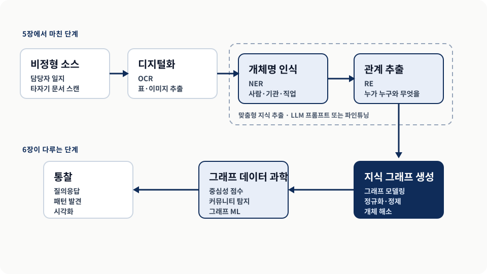
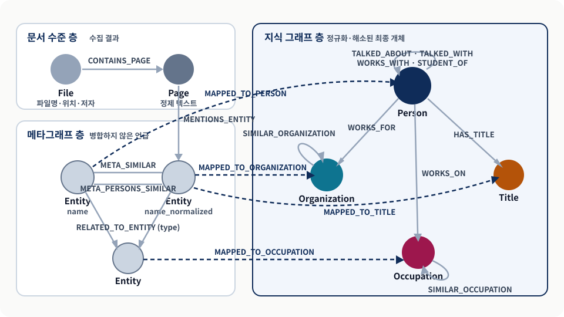
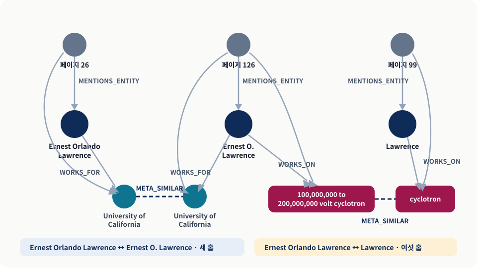
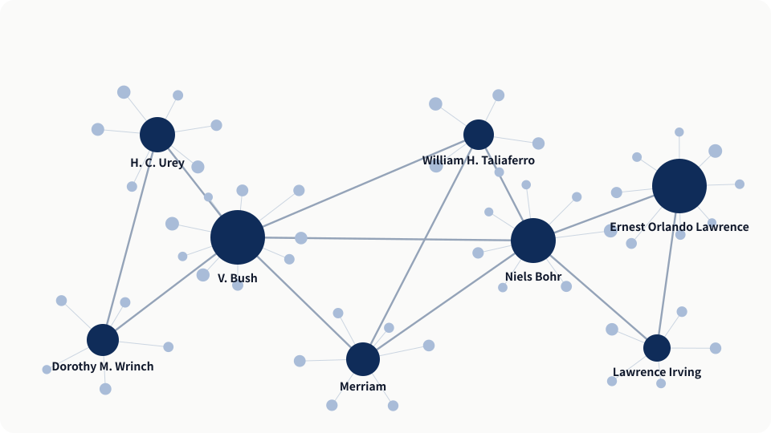
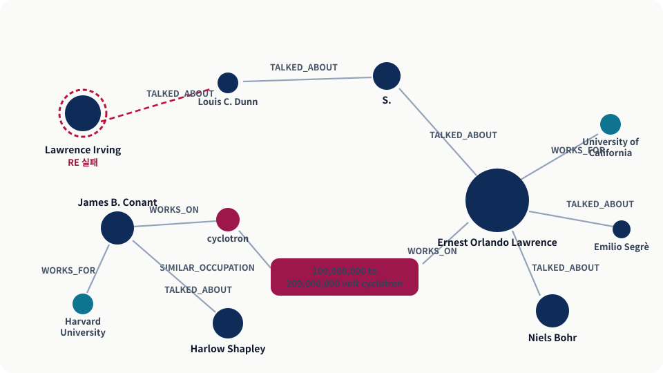
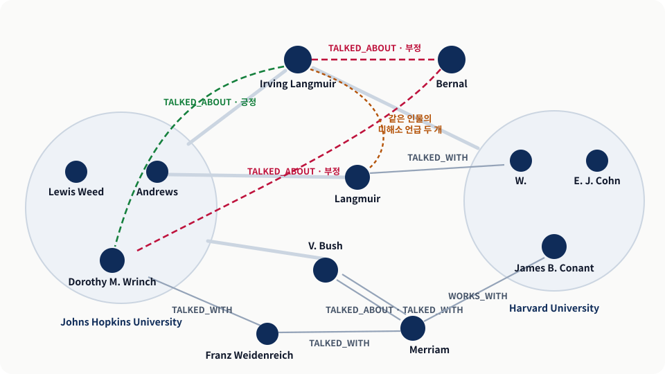

추출이 끝난 자리
남은 것은 흩어진 언급
- Ernest Orlando Lawrence · Ernest O. Lawrence · Lawrence
- 직함이 이름에 섞여 들어온 노드
- 대소문자만 다른 같은 직업
지식 그래프와 LLM 실전 · Chapter 6
추출된 지식을 검증 가능한 지식 그래프로 조립하고, 지적 네트워크를 분석하기까지
같은 사람이 문서마다 다른 이름으로 불리고, 대조할 정답 사전은 세상에 없다. 이 두 조건이 이 장의 모든 설계를 밀어붙인다.
추출이 끝난 자리
이 장의 계약
오늘의 결론 — LLM은 후보를 만들고, 스키마가 그 후보를 검증 가능한 사실로 확정한다.
남은 난제를 정리하고, 스키마를 세우고, 표기를 다듬어 언급을 합친 뒤, 완성된 그래프로 사람 네트워크를 읽는다.
추출을 끝내도 왜 그래프가 저절로 생기지 않는지 본다.
문서·메타그래프·지식 그래프로 책임을 나눈다.
표기를 다듬고 흩어진 언급을 한 사람으로 모은다.
중심성과 몇 홉 질의로 실제 업무 질문에 답한다.
발표의 약속 — 모든 단계는 “틀렸을 때 되돌릴 수 있는가”라는 하나의 기준으로 읽는다.
OCR이 인명을 잘못 읽으면 개체 해소가 그 오류를 “다른 사람”으로 확정한다. 그래서 단계별로 따로 진단해야 한다.

SECTION 6.1
난제를 먼저 목록화해야 스키마와 검증 지점이 정해진다
6.1여기 등장하는 연구 분야 상당수는 더 이상 연구되지 않아, 중의성 해소 기준으로 삼을 사전이나 지식 베이스를 만들 가망이 없다.
스캔과 OCR을 거쳐야 하고 인식 오류가 남는다.
외부 지식 베이스로 뜻을 확정할 수 없다.
“J. R. Smith”를 “S.”로 쓰는 습관이 사람마다 다르다.
한 페이지에 유의미한 관계가 수십 개 들어 있다.
주장의 강도 — 원자료는 LLM이 이 문제들의 “상당수를 풀 수 있다”고 말한다. 없앤다고 말하지 않는다.
SECTION 6.1.1
층을 나누는 이유는 저장 공간이 아니라 순서다
6.1.1이 다리를 지우면 최종 그래프에서 원본 페이지로 되짚어 가는 경로가 끊긴다.

그래프 모델링의 판단 기준은 중복 제거가 아니라 “우리가 던질 질문이 몇 홉의 순회로 표현되는가”이다.
File은 파일명·위치·저자를, Page는 정제된 최종 텍스트를 갖는다.
병합하지 않은 Entity와 그 언급이 나온 페이지를 잇는다.
Person·Title·Organization·Occupation과 의미 관계를 담는다.
비유와 그 한계 — LLM은 가끔 사실을 지어내는 달변가, 지식 그래프는 검증된 사실의 대장이다. 다만 메타그래프의 언급은 서로 연결돼 있어 기록 자체가 검증 재료가 된다.
SECTION 6.1.2
병합을 미루는 대가는 노드 수, 얻는 것은 되돌릴 자유다
6.1.2청킹은 가장 단순한 페이지 단위로 하고, 식별된 모든 언급을 병합하지 않은 Entity 노드로 만든다. 관계는 RELATED_TO_ENTITY 하나에 type 속성으로 종류를 담는다.
데이터 범위 — 예제는 1만 페이지 중 워런 위버 일지 약 150페이지 표본이며, 1939년까지 거슬러 가는 타자기 문서라 철자 오인식이 남아 있을 수 있다.
SECTION 6.1.3
사실은 하나인데 표기가 갈라져 노드가 둘로 나뉘는 상황을 줄인다
6.1.3전제: Entity 노드가 적재돼 있고, apoc.text.join은 APOC 플러그인을 필요로 한다.
MATCH (e:Entity {label: "Person"})
WITH e, CASE WHEN ANY(title IN $remove_titles
WHERE toLower(e.name) STARTS WITH title)
THEN apoc.text.join(split(e.name, " ")[1..], " ")
ELSE e.name END AS name
SET e.name_normalized = name$remove_titles는 dr. · prof. · dean · president 같은 직함 목록이다.split(...)[1..]로 첫 토큰을 잘라낸다.toLower로 소문자 통일한다.name은 그대로 두고 name_normalized에만 쓴다.왜 새 속성인가 — “dean을 직함으로 걷어낸 판단”이 틀렸다고 밝혀져도 원본 표기를 잃지 않는다.
GPT는 직함을 이름과 별개로 다루라는 지시를 받고도 가끔 직함을 이름에 끼워 넣었다. 이 규칙은 그 흔한 오염을 걷어낼 뿐이다.
걸러지는 것
남는 것
판단 — 정규화는 개체 해소의 대체물이 아니라 그 앞에 두는 전처리다.
SECTION 6.1.4
LLM이 부담을 줄여 주지만 없애 주지는 않는다
6.1.4두 언급이 모두 캘리포니아 대학교 직원이면 세 홉, 직업 유사성까지 거치면 여섯 홉으로 이어진다. 관계형 질의로는 표현하기 어려운 순회다.

성에만 의존하면 잘못된 일치가 대량으로 생긴다. 성에 더해 이름(또는 약자)까지 맞을 때 비로소 후보가 된다.
| 신호 | 무엇을 보는가 | 실패 위험 |
|---|---|---|
| 문자열 유사도 | 이름 표기의 일치와 약자 패턴 | 성만 같은 동명이인이 대량의 오탐을 만든다 |
| 그래프 관계 | WORKS_FOR·WORKS_ON 같은 공통 이웃 | 홉 수가 길어질수록 근거가 간접적이 된다 |
| 커뮤니티 | TALKED_ABOUT·TALKED_WITH로 형성된 군집 | 표본이 적으면 군집 자체가 불안정하다 |
| 의미 유사도 | 임베딩 공간에서의 주제 근접성 | 상위·하위 개념을 같은 것으로 뭉갤 수 있다 |
팁 — 조직명의 Foundation처럼 흔한 단어는 유사도 링크를 만들면 역효과다. 도메인별 불용어 목록을 먼저 정한다.
약결합 요소(WCC)는 방향을 무시하고 이어진 덩어리를 찾으므로 “A는 B와, B는 C와 비슷하다”는 연쇄를 한 그룹으로 만든다.
기준을 충족하는 사람 언급 사이에 META_PERSONS_SIMILAR를 만든다.
같은 개체로 해소될 언급 그룹을 식별한다.
그룹마다 가장 긴 이름을 대표로 고른다.
해소된 개체로 최종 지식 그래프 층을 만든다.
범위 — 저자들은 이를 완성된 해법이 아니라 베이스라인이라 부르며 “표면만 긁었다”고 적는다. 잘못된 간선 하나가 무관한 두 그룹을 이어 붙일 수 있다.
SECTION 6.2
알고리즘 선택이 곧 질문 선택이다
6.2매개 중심성은 그 노드를 지나는 최단 경로 수를 센다. 덜 알려진 인물이 함께 부각되는 것이 조사할 신호다.

오른쪽 끝 Occupation에서 시작해 왼쪽으로 읽는다. 직업 이름은 정규화 단계에서 소문자로 저장돼 있다.
MATCH path = ()<-[:WORKS_ON|WORKS_FOR]-(p2:Person)
-[:TALKED_ABOUT|TALKED_WITH|WORKS_WITH|STUDENT_OF*1..2]->
(p:Person)-[:WORKS_ON]->()-[:SIMILAR_OCCUPATION*0..1]-(o:Occupation)
WHERE o.name = toLower($occupation)
AND NOT ANY(x IN nodes(path) WHERE x.name = "WW")
RETURN pathSIMILAR_OCCUPATION*0..1이 해소된 동의 직업까지 한 홉 넓힌다.*1..2가 사람과 사람 사이 두 홉을 허용해 간접 추천을 잡는다.x.name = "WW"는 기록자 워런 위버를 제외하는 필터다.읽는 법 — 질의는 “누가 중요한가”를 묻지 않고 “어떤 경로가 존재하는가”를 묻는다. 중요도 판단은 중심성이 따로 맡는다.
로런스와 보어 외에 할로 섀플리, 제임스 B. 코넌트가 가까이 나타난다. 하버드는 사이클로트론을 만들었다.

GPT가 로런스 어빙(Laurence Irving)의 이름 첫 부분을 Lawrence로 잘못 표기했다. 같은 페이지에 어니스트 로런스가 있었던 탓으로 보인다.
왜 걸러지지 않았나
그래서 필요한 것
운영 경계 — 분석 화면은 결과를 보여 주는 데서 멈추면 안 되고, 반증 경로까지 제공해야 한다.
어빙 랭뮤어는 두 대학 모두와 한 홉으로 이어지지만, 그는 버널에게 부정적 태도를 보인다.

SECTION 6.3
남은 과제는 더 좋은 모델이 아니라 더 나은 구조와 해소다
6.3그럼에도 지식 그래프의 복잡성은 충분히 드러났다. 먼저 추출과 해소의 품질을 올리는 세 과제가 남는다.
| 과제 | 무엇을 하는가 | 무엇이 열리는가 |
|---|---|---|
| 지식 추출 개선 | 프롬프트 반복 또는 LLM 파인튜닝 | 그래프 정확도 향상 |
| 여러 페이지 문서 | ChatGPT-3.5-Turbo로 일지 항목 경계를 식별해 동시 처리 | 토큰 한도 안에서 의미 단위 유지 |
| 개체 해소 확장 | 다른 개체로 확장하고 WikiData 등으로 중의성 해소 보완 | 외부 지식과 연결된 식별자 |
공통점 — 세 과제 모두 모델 성능이 아니라 처리 단위와 식별자 품질을 다룬다.
보조금과 대화를 노드로 들이면 “추천이 자금 지원으로 이어졌는가”를 물을 수 있게 된다.
| 과제 | 무엇을 하는가 | 무엇이 열리는가 |
|---|---|---|
| 보조금 추가 | 이사회 회의록의 보조금을 일지 대화에 연결 | “추천이 자금 지원으로 이어졌는가”에 답 |
| 직업 해소 | 임베딩 후 병합 계층적 군집화 | 핵물리학·동위원소·중질소의 포함 관계 연결 |
| 대화 노드 | 날짜·인터뷰어·인터뷰이·주제로 Conversation 생성 | 후속 연쇄 식별과 보조금 연결 |
관찰 — 여섯 중 넷이 해소와 구조에 관한 항목이다. 모델 교체만으로는 닫히지 않는다.
SECTION 6.4
다섯 가지 모두 답을 얻는 능력이 아니라 답을 신뢰하는 능력이다
6.4그 대신 LLM의 언어 이해력으로 사실을 추출해 그래프를 만들면, 생성된 통찰에 확신을 가질 수 있다.
밑바탕 데이터와 추론 과정을 검증할 도구를 준다.
추출된 사실 위에서 결과를 평가할 수 있다.
비싼 모델은 그래프를 만들 때만 쓴다.
전역 조망과 파고드는 조사를 함께 제공한다.
다섯째 — 고급 분석. 그래프 기반 후속 분석과 ML을 수행하면서도 답변 생성 과정을 온전히 통제할 수 있다.
아래는 원자료의 주장이 아니라, 같은 패턴을 사내 회의록·상담 기록·연구 노트에 옮길 때 AIML Quant가 제안하는 점검 항목이다.
GOOD SIGNAL
WARNING SIGNAL
작은 실험 — 임계값 두 가지로 그래프를 두 번 만들고, 정답을 아는 인물 30명으로 신호별 정밀도를 따로 잰다.
다음 질문에 답할 수 있으면 이 장의 설계 논리를 잡은 것이다.
토론 — 우리 도메인에서 “메타그래프 층”에 해당하는 것은 무엇이고, 지금 그 자리는 무엇으로 채워져 있는가?